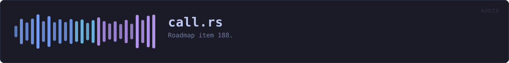

crates/veilvoice-audio/src/call.rs
veilvoice-audio · 716 lines · read the source here · or on GitHub
Roadmap item 188. A call, recorded one track per side.
What this is for
A phone does not give its calls to a computer over a cable. Android has refused call audio to ordinary apps since Android 9 and iOS has never offered it. What does work is the call running through the computer: Phone Link on Windows, an iPhone call taken on a Mac, a Linux machine acting as a Bluetooth hands-free headset, or any calling program on the desktop. Then the other side comes out of the computer's speakers and you go into its microphone, and those are two things this crate can open separately.
So a call here is a list of Partys, and each one is a device: you on a Capture::Microphone, the other side on Capture::Playback, which is the computer's own output recorded as it plays. A headset splitter cable from a phone into an audio interface is the same shape with the other side on a microphone input instead, which is why both are one type rather than two features.
Why one track per side, and not a room
room(crate::room) mixes everybody into one output, which is what an interview going out to a call wants. A call being recorded wants the opposite. Mixing the other side into an output on this machine would play them back into the speakers they are being recorded from, and every choice the person makes is per person: you veiled and them as they are, them recorded and you not at all. Those are only exact when each side is its own signal from the first sample, so nothing here mixes.
Each side runs on its own clock, and that is allowed
A room refuses devices that disagree on a rate, because it mixes them and nothing in this crate resamples (F-168). A call does not mix, so each side records at the rate its own device runs at and its engine is configured to match. A microphone at 44.1 kHz and speakers at 48 kHz is an ordinary laptop, and refusing it would refuse most calls for a reason that does not apply.
The one exception is listening. A side that is Party::heard is played to the listening device as it arrives, and that is one output fed from those sides, so they and it have to agree on a rate exactly as a room does.
The engine runs in the input callback
There is no output to drive it, so each side's engine runs where that side's samples arrive. The rule is the one live(crate::live) states: nothing in a callback allocates, locks or prints. Every buffer is sized before the stream starts and a block longer than them is processed in pieces rather than grown into.
Hearing the call, at the level it arrives
When the call is on the computer it is already playing through the speakers, and recording it changes nothing about that. When it arrives on a cable it is not playing anywhere, so a side can be heard: copied, untouched and at the level it arrived, to the listening device. Nothing scales it. What the person hears then depends on their own volume control, which is theirs.
Nothing here tells anybody a call is being recorded
Recording a side reads samples that are already on this machine. It sends nothing to the call and changes nothing the other side can hear. Telling them is a separate choice, made by the person, and it is not this module's.
In plain words
On a call, you and the person you are talking to are recorded separately: you from the microphone, them from what the computer plays. Each of you can be disguised or left as you are, and kept or not kept at all. Nobody on the call is told by this; it only listens to what is already here.
WHAT THIS FILE CONTAINS
716 lines defining 9 functions (5 public), 4 types and 0 constants. Everything below is read out of the source, so it cannot disagree with the code.
The types it owns.
struct Partyline 84 · One side of a call: where their voice arrives, and what to do with it.struct KeptCallline 103 · The recorders a call was asked for, one Kept per party in order.struct CallSessionline 109 · A running call.struct Sharedline 120 · Counted in the audio callbacks, read by the caller.
What happens when it runs. These are the ways in: public, and nothing else in this file calls them, so they are what an outside caller reaches first.
refusalline 137 · Why a call cannot be recorded as it was described, or None when it can.
reacheswhere_it_isCallSession::startline 262 · Open every party's device and keep what each was asked to keep.
reachesconfig_at,default_config,no_playback_capture,rangesCallSession::statsline 547 · Read the counters, resetting the peak meters.CallSession::interferenceline 562 · What the platform last reported about any of the streams.
WHAT CALLS WHAT
The functions this file defines, and the calls between them. An edge means the callee's name appears, called, inside the caller's body. This is a syntactic reading, not a type-resolved one.
The same graph as Mermaid source
%%{init: {"theme":"base","themeVariables":{"background":"#1a1b26","primaryColor":"#1f2335","primaryTextColor":"#c0caf5","primaryBorderColor":"#7aa2f7","secondaryColor":"#16161e","tertiaryColor":"#16161e","lineColor":"#737aa2","textColor":"#c0caf5","mainBkg":"#1f2335","nodeBorder":"#7aa2f7","clusterBkg":"#16161e","clusterBorder":"#2f3549","fontFamily":"ui-monospace, SFMono-Regular, Consolas, monospace","fontSize":"14px"}}}%%
flowchart TD
n_refusal(["refusal<br/>line 137"])
n_where_it_is["where_it_is<br/>line 179"]
n_default_config["default_config<br/>line 194"]
n_ranges["ranges<br/>line 206"]
n_config_at["config_at<br/>line 218"]
n_no_playback_capture["no_playback_capture<br/>line 245"]
n_start(["CallSession::start<br/>line 262"])
n_stats(["CallSession::stats<br/>line 547"])
n_interference(["CallSession::interference<br/>line 562"])
n_refusal --> n_where_it_is
n_start --> n_config_at
n_start --> n_default_config
n_start --> n_no_playback_capture
n_start --> n_ranges
click n_refusal href "https://github.com/tilas01/veilvoice/blob/main/crates/veilvoice-audio/src/call.rs#L137" "open the source"
click n_where_it_is href "https://github.com/tilas01/veilvoice/blob/main/crates/veilvoice-audio/src/call.rs#L179" "open the source"
click n_default_config href "https://github.com/tilas01/veilvoice/blob/main/crates/veilvoice-audio/src/call.rs#L194" "open the source"
click n_ranges href "https://github.com/tilas01/veilvoice/blob/main/crates/veilvoice-audio/src/call.rs#L206" "open the source"
click n_config_at href "https://github.com/tilas01/veilvoice/blob/main/crates/veilvoice-audio/src/call.rs#L218" "open the source"
click n_no_playback_capture href "https://github.com/tilas01/veilvoice/blob/main/crates/veilvoice-audio/src/call.rs#L245" "open the source"
click n_start href "https://github.com/tilas01/veilvoice/blob/main/crates/veilvoice-audio/src/call.rs#L262" "open the source"
click n_stats href "https://github.com/tilas01/veilvoice/blob/main/crates/veilvoice-audio/src/call.rs#L547" "open the source"
click n_interference href "https://github.com/tilas01/veilvoice/blob/main/crates/veilvoice-audio/src/call.rs#L562" "open the source"
classDef entry fill:#1f2335,stroke:#7aa2f7,color:#c0caf5
class n_refusal,n_start,n_stats,n_interference entry
classDef api fill:#1f2335,stroke:#7dcfff,color:#c0caf5
class n_no_playback_capture api
classDef helper fill:#1f2335,stroke:#bb9af7,color:#c0caf5
class n_where_it_is,n_default_config,n_ranges,n_config_at helper
subgraph chart_key ["Key"]
direction LR
key_entry["entry: a way in: public, and nothing in this file calls it"]
key_api["api: public, and also used inside this file"]
key_helper["helper: private to this file"]
end
class key_entry entry
class key_api api
class key_helper helperThis site loads no third-party script, so it cannot run Mermaid; the diagram above is the same nodes and edges drawn by the generator instead. GitHub renders the source below directly.
ITEMS
| Item | Line | Documentation |
|---|---|---|
Party pub struct | 84 | One side of a call: where their voice arrives, and what to do with it. |
KeptCall pub struct | 103 | The recorders a call was asked for, one Kept per party in order. |
CallSession pub struct | 109 | A running call. |
Shared struct | 120 | Counted in the audio callbacks, read by the caller. |
refusal pub fn | 137 | Why a call cannot be recorded as it was described, or None when it can. |
where_it_is fn | 179 | A device as a sentence names it. |
default_config fn | 194 | The configuration a party's stream opens with. |
ranges fn | 206 | What a party's device reports it will take, as plain numbers. |
config_at fn | 218 | The configuration a party's device offers at rate. |
no_playback_capture pub fn | 245 | Why recording what this computer plays did not open, in words. |
CallSession::start pub fn | 262 | Open every party's device and keep what each was asked to keep. |
CallSession::stats pub fn | 547 | Read the counters, resetting the peak meters. |
CallSession::interference pub fn | 562 | What the platform last reported about any of the streams. |